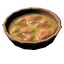

Home
Serpent Stew

Description
Getting the meat for this stew is an arduous task, and requires a viking with combat prowess and good sea legs. In the end you'll make one of the heartiest meals an adventurer could ask for.
Ingredients
- 1 Mushroom
- 1 Cooked serpent meat
- 2 Honey
Steps
- Begin by cooking your serpent meat over an open flame using your iron cooking station
- Move over to your cauldron and bring about a half cauldron of water to a boil
- Add your honey and mushroom to form your broth
- Then lower your meat into the broth and let it fall off the bone
- Leave it to cool for awhile before enjoying